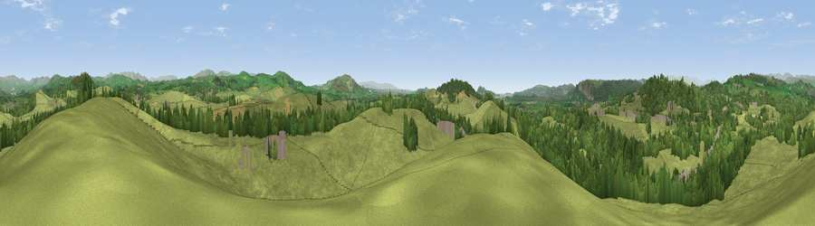

Viewpoint near Sedgwick
#17311 in England · top 60% of its area beats it · near SedgwickThe view, rendered

A 360° render of this exact spot computed from the terrain model, tree cover and land cover — summer colours, afternoon light, calibrated against photographs of famous viewpoints. Real trees, hedges and buildings will differ in detail.
The panorama
Grey silhouette: terrain skyline in each direction (720 bearings, Earth curvature and refraction included). Dashed green: skyline with trees (+15 m) and buildings (+8 m) as obstacles. Blue strip: how far the ground is visible on each bearing.
Where the view opens
Wedge length = distance to the farthest visible ground on that bearing (vegetation-aware). Rings at 10, 25 and 50 km.
What fills the view
75% grassland · 20% woodland · 3% cropland · 2% built-up
Angular shares of the visible panorama (visual magnitude), not map area. Landscape diversity 0.31 (0–1 Shannon).
Key numbers
More beautiful places nearby
The staircase of upgrades: each row has a higher view potential than everything closer. Driving times are estimates from straight-line distance, calibrated against real road routing — check an actual route before setting out.
| Place | Direction | Drive | Score |
|---|---|---|---|
| The Helm | NE · 3 km | ~8 min | 68.4 |
| Viewpoint near Mill Side | W · 5 km | ~12 min | 72.9 |
| Warth Hill | ESE · 6 km | ~13 min | 73.6 |
| Viewpoint near Lupton | ESE · 6 km | ~13 min | 75.1 |
| Viewpoint near Lupton | SSE · 6 km | ~13 min | 78.7 |
| Viewpoint near Arnside | SSW · 11 km | ~20 min | 80.7 |
| Viewpoint near Staveley-in-Cartmel | W · 12 km | ~23 min | 82.8 |
| Viewpoint near Finsthwaite | W · 12 km | ~23 min | 90.3 |
54.26933, -2.75196 · source: screening · position refined by local search. Computed location — check access rights before visiting.